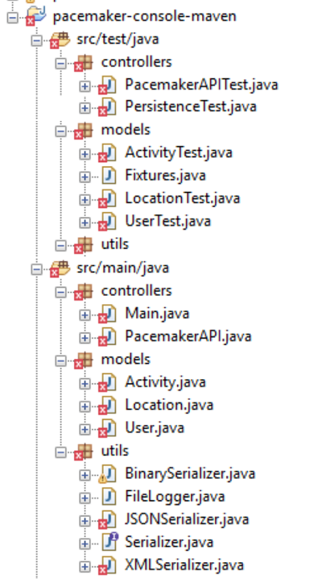
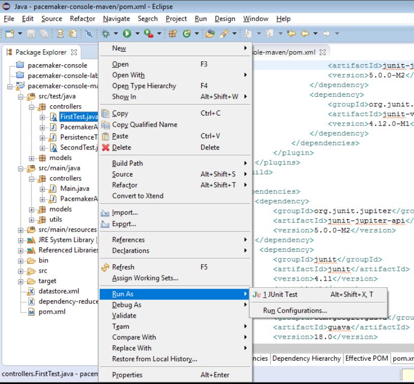

-
Objectives
In the previous lab, you installed Maven. In this lab, we will incorporate Maven into our pacemaker-console-lab05 solution. We will also use Maven to bring JUnit5 capabilities into Eclipse.
-
Verify your Maven Installation
Visit the main Maven site:
and review some of the general introductions.
Then, enter the command mvn -version on your command shell. You should see output similar to this:
C:\Users\Siobhan>mvn -version Apache Maven 3.5.0 (ff8f5e7444045639af65f6095c62210b5713f426; 2017-04-03T20:39:06+01:00) Maven home: C:\dev\apache-maven-3.5.0\bin\.. Java version: 1.8.0_73, vendor: Oracle Corporation Java home: C:\Program Files\Java\jdk1.8.0_73\jre Default locale: en_IE, platform encoding: Cp1252 OS name: "windows 10", version: "10.0", arch: "amd64", family: "windows" C:\Users\Siobhan>Note the version of the JDK that Maven uses. There are significant differences between 1.6, 1.7, 1.8 and the latest vesrsion 1.9. In forthcoming labs, we will move to JDK9 (i.e. 1.9).
If the above mvn command isn't recognised, revisit the steps below to install / fix your installation (maybe you installed it, but your path variables are not right).
Steps involved in installing Maven
Download the project archive (note: download the binary and not the source):
Follow these installations instructions:
-
5-minute Maven Guide
In this step, you will work through the Maven example we covered in lectures.
Navigate to this 5 minute guide:
and, in your eclipse workspace directory, perform the steps involved in the Creating a Project section.
This will build a starter app called my-app. Familiarise yourself with the struture of the generated folders and, in particular, the pom.xml. Finish the tutorial by executing the generated Jar file. "Hello World!" should be printed to the console.
For information on writing pom.xml, please visit:
-
Pacemaker with Maven Project
Review pacemaker project
You should have the pacemaker project from lab05 in your workspace. If you don't have a lab05 pacemaker project, you can download it from here:
We will now convert this to a Maven-based project and use the Maven Build System to manage our dependencies (i.e. components, JUnit versions, etc).
Create a starter Maven Project
Navigate to a suitable folder (i.e. your eclipse workspace that you plan to use for maven projects) and enter the following command to create a starter maven project called pacemaker-console-maven:
mvn archetype:generate -DarchetypeGroupId=org.apache.maven.archetypes -DarchetypeArtifactId=maven-archetype-quickstart -DgroupId=pacemaker -DartifactId=pacemaker-console-mavenIf you are asked to enter versions for certain items, just hit the enter key. Eventually it should complete successfully.
The command will have created the following project structure:

The key file to inspect is the generated pom.xml:
<project xmlns="http://maven.apache.org/POM/4.0.0" xmlns:xsi="http://www.w3.org/2001/XMLSchema-instance" xsi:schemaLocation="http://maven.apache.org/POM/4.0.0 http://maven.apache.org/xsd/maven-4.0.0.xsd"> <modelVersion>4.0.0</modelVersion> <groupId>pacemaker</groupId> <artifactId>pacemaker-console-maven</artifactId> <version>1.0-SNAPSHOT</version> <packaging>jar</packaging> <name>pacemaker-console-maven</name> <url>http://maven.apache.org</url> <properties> <project.build.sourceEncoding>UTF-8</project.build.sourceEncoding> </properties> <dependencies> <dependency> <groupId>junit</groupId> <artifactId>junit</artifactId> <version>3.8.1</version> <scope>test</scope> </dependency> </dependencies> </project>Open your project in Eclipse
Open Eclipse. On the menu bar, choose File, then Import....
When the dialog opens, select Maven, then Existing Maven Projects. Locate your
pacemaker-console-maven project and import it.If you are using an older version of Eclipse, you may need to perform these steps instead of the above import.
- On the command line, change into the pacemaker-console-maven folder and enter the following command:
mvn eclipse:eclipseThis will generate an eclipse project from the pom.
In eclipse, import this project (as an existing project). It should show up on your workspace like this:

Copy paste sources into new project
Within eclipse, you should be able to copy/paste all of the sources (the .java files only) into the appropriate folder in the new project. Also, delete the maven generated pacemaker packages:

There are a significant number of errors however, which we will fix in the next step. These errors have arisen because we haven't yet included our components (e.g. XStream, Cliche, etc) in the project. We are going to get Maven to manage this for us!
-
Incorporate Correct Library References
Inspect the pacemaker-console-maven folder, open and review the "pom.xml" file.
<project xmlns="http://maven.apache.org/POM/4.0.0" xmlns:xsi="http://www.w3.org/2001/XMLSchema-instance" xsi:schemaLocation="http://maven.apache.org/POM/4.0.0 http://maven.apache.org/xsd/maven-4.0.0.xsd"> <modelVersion>4.0.0</modelVersion> <groupId>pacemaker</groupId> <artifactId>pacemaker-console-maven</artifactId> <version>1.0-SNAPSHOT</version> <packaging>jar</packaging> <name>pacemaker-console-maven</name> <url>http://maven.apache.org</url> <properties> <project.build.sourceEncoding>UTF-8</project.build.sourceEncoding> </properties> <dependencies> <dependency> <groupId>junit</groupId> <artifactId>junit</artifactId> <version>3.8.1</version> <scope>test</scope> </dependency> </dependencies> </project>Modify the "url" and "version" elements to be more consistent with our project:
<version>1.0</version> <url>www.wit.ie</url>A note on Version VS SNAPSHOT:
- Version: if Maven previously downloaded the specified version, say 1.0, it will never try to download a newer 1.0 that is available in repository. To download the updated code, the version is be upgraded to 1.1.
- SNAPSHOT: Maven will automatically fetch the latest SNAPSHOT (e.g. 1.0-SNAPSHOT) everytime the team builds their project.
Java version
Let's ensure that we are using Java9 for our application. We can specifically enable this version by extending the
section as follows: <properties> <project.build.sourceEncoding>UTF-8</project.build.sourceEncoding> <maven.compiler.source>1.9</maven.compiler.source> <maven.compiler.target>1.9</maven.compiler.target> </properties>As the JDK is not a
, you need to have JDK9 installed on your computer for this to be effective. JUnit version
The junit version in the generated POM is an older version (3.8.1), acquire and configure the 4.12 version:
<dependency> <groupId>junit</groupId> <artifactId>junit</artifactId> <version>4.12</version> <scope>test</scope> </dependency>Incorporating our components/libraries
We are using a range of libraries (Cliche, Guava, XStream, Ascii tables), which we must incorporate as dependencies into the pom. Note that we are not including the Ascii Tables component in the dependencies...we will add the Jar file from last weeks labs as a local M2 repo file instead (next step).
<!-- https://mvnrepository.com/artifact/com.google.guava/guava --> <dependency> <groupId>com.google.guava</groupId> <artifactId>guava</artifactId> <version>23.0</version> </dependency> <!-- https://mvnrepository.com/artifact/com.thoughtworks.xstream/xstream --> <dependency> <groupId>com.thoughtworks.xstream</groupId> <artifactId>xstream</artifactId> <version>1.4.10</version> </dependency> <!-- https://mvnrepository.com/artifact/com.googlecode.clichemaven/cliche --> <dependency> <groupId>com.googlecode.clichemaven</groupId> <artifactId>cliche</artifactId> <version>110413</version> </dependency>Complete POM
The full version of the POM should look like this:
<project xmlns="http://maven.apache.org/POM/4.0.0" xmlns:xsi="http://www.w3.org/2001/XMLSchema-instance" xsi:schemaLocation="http://maven.apache.org/POM/4.0.0 http://maven.apache.org/xsd/maven-4.0.0.xsd"> <modelVersion>4.0.0</modelVersion> <groupId>pacemaker</groupId> <artifactId>pacemaker-console-maven</artifactId> <version>1.0</version> <packaging>jar</packaging> <name>pacemaker-console-maven</name> <url>www.wit.ie</url> <properties> <project.build.sourceEncoding>UTF-8</project.build.sourceEncoding> <maven.compiler.source>1.8</maven.compiler.source> <maven.compiler.target>1.8</maven.compiler.target> </properties> <dependencies> <dependency> <groupId>junit</groupId> <artifactId>junit</artifactId> <version>4.12</version> <scope>test</scope> </dependency> <!-- https://mvnrepository.com/artifact/com.google.guava/guava --> <dependency> <groupId>com.google.guava</groupId> <artifactId>guava</artifactId> <version>23.0</version> </dependency> <!-- https://mvnrepository.com/artifact/com.thoughtworks.xstream/xstream --> <dependency> <groupId>com.thoughtworks.xstream</groupId> <artifactId>xstream</artifactId> <version>1.4.10</version> </dependency> <!-- https://mvnrepository.com/artifact/com.googlecode.clichemaven/cliche --> <dependency> <groupId>com.googlecode.clichemaven</groupId> <artifactId>cliche</artifactId> <version>110413</version> </dependency> </dependencies> </project>To ensure that the maven file is correct, return to your command prompt and enter the following command:
mvn validateThis will pick up any format errors in the POM, although it will not check availability of the dependencies.
C:\Users\Siobhan\Desktop\agile workspace\pacemaker-console-maven>mvn validate [INFO] Scanning for projects... [INFO] [INFO] ------------------------------------------------------------------------ [INFO] Building pacemaker-console-maven 1.0 [INFO] ------------------------------------------------------------------------ [INFO] ------------------------------------------------------------------------ [INFO] BUILD SUCCESS [INFO] ------------------------------------------------------------------------ [INFO] Total time: 0.147 s [INFO] Finished at: 2017-10-10T12:17:09+01:00 [INFO] Final Memory: 6M/155M [INFO] ------------------------------------------------------------------------ C:\Users\Siobhan\Desktop\agile workspace\pacemaker-console-maven> -
Build
Attempting to compile and test
In your command prompt/shell, type in mvn test. It will fail because maven cannot resolve the ASCII Table dependency:
[INFO] ------------------------------------------------------------------------ [INFO] BUILD FAILURE [INFO] ------------------------------------------------------------------------ [INFO] Total time: 1.874 s [INFO] Finished at: 2017-10-10T13:26:39+01:00 [INFO] Final Memory: 14M/164M [INFO] ------------------------------------------------------------------------ [ERROR] Failed to execute goal org.apache.maven.plugins:maven-compiler-plugin:3.1:compile (default-compile) on project pacemaker-console-maven: Compilation failure: Compilation failure: [ERROR] /C:/Users/Siobhan/Desktop/agile workspace/pacemaker-console-maven/src/main/java/controllers/Main.java:[8,34] package com.bethecoder.ascii_table does not exist [ERROR] /C:/Users/Siobhan/Desktop/agile workspace/pacemaker-console-maven/src/main/java/controllers/Main.java:[9,39] package com.bethecoder.ascii_table.impl does not exist [ERROR] /C:/Users/Siobhan/Desktop/agile workspace/pacemaker-console-maven/src/main/java/controllers/Main.java:[10,39] package com.bethecoder.ascii_table.spec does not exist [ERROR] /C:/Users/Siobhan/Desktop/agile workspace/pacemaker-console-maven/src/main/java/controllers/Main.java:[47,5] cannot find symbol [ERROR] symbol: class IASCIITableAware [ERROR] location: class controllers.Main [ERROR] /C:/Users/Siobhan/Desktop/agile workspace/pacemaker-console-maven/src/main/java/controllers/Main.java:[47,44] cannot find symbol [ERROR] symbol: class CollectionASCIITableAware [ERROR] location: class controllers.Main [ERROR] /C:/Users/Siobhan/Desktop/agile workspace/pacemaker-console-maven/src/main/java/controllers/Main.java:[48,5] cannot find symbol [ERROR] symbol: variable ASCIITable [ERROR] location: class controllers.Main [ERROR] -> [Help 1] [ERROR] [ERROR] To see the full stack trace of the errors, re-run Maven with the -e switch. [ERROR] Re-run Maven using the -X switch to enable full debug logging. [ERROR] [ERROR] For more information about the errors and possible solutions, please read the following articles: [ERROR] [Help 1] http://cwiki.apache.org/confluence/display/MAVEN/MojoFailureException C:\Users\Siobhan\Desktop\agile workspace\pacemaker-console-maven>Resolving ASCII Table Issue
We have a local ASCII Table Jar (from last weeks labs) that we want to include in project. Note that we could use the version that is in the public maven repo, however, we want to demonstrate installing Jars in local repos...so we will do it with the ASCII Table Jar.
Locate the jar from your previous project...it should be in your lib folder and should be called java-ascii-table-1.0.jar. If you cannot find it, you can download it from here.
Create a, say, resources folder in your ..\pacemaker-console-maven\src\main directory and place your jar file in there.
In your command prompt/shell, navigate to this new folder and enter the following command:
mvn install:install-file -Dfile=java-ascii-table-1.0.jar -DgroupId=java-ascii-table -DartifactId=java-ascii-table -Dversion=1.0 -Dpackaging=jarThis will install the jar file in the local .m2 repository. In windows, this repo is located in a similar directory structure to this: C:\Users\Siobhan.m2
C:\Users\Siobhan\Desktop\agile workspace\pacemaker-console-maven\src\main\resources>mvn install:install-file -Dfile=java-ascii-table-1.0.jar -DgroupId=java-ascii-table -DartifactId=java-ascii-table -Dversion=1.0 -Dpackaging=jar [INFO] Scanning for projects... [INFO] [INFO] ------------------------------------------------------------------------ [INFO] Building Maven Stub Project (No POM) 1 [INFO] ------------------------------------------------------------------------ [INFO] [INFO] --- maven-install-plugin:2.4:install-file (default-cli) @ standalone-pom --- [INFO] Installing C:\Users\Siobhan\Desktop\agile workspace\pacemaker-console-maven\src\main\resources\java-ascii-table-1.0.jar to C:\Users\Siobhan\.m2\repository\java-ascii-table\java-ascii-table\1.0\java-ascii-table-1.0.jar [INFO] ------------------------------------------------------------------------ [INFO] BUILD SUCCESS [INFO] ------------------------------------------------------------------------ [INFO] Total time: 0.634 s [INFO] Finished at: 2017-10-10T16:45:17+01:00 [INFO] Final Memory: 7M/123M [INFO] ------------------------------------------------------------------------ C:\Users\Siobhan\Desktop\agile workspace\pacemaker-console-maven\src\main\resources>In your pom.xml, add the following dependency to our locally installed java-ascii-table:
<dependency> <groupId>java-ascii-table</groupId> <artifactId>java-ascii-table</artifactId> <version>1.0</version> </dependency>Build Goal
In your command prompt/shell, return to your "pacemaker-console-maven" project folder where your pom.xml is stored. Type the following:
mvn testA broad range of downloads will be generated by this command, including updates to maven itself and the referenced libraries. If successful, the build process will eventually report successful test execution.
Locate and inspect the generated "target" folder in the pacemaker-console-maven project.
Note: if you used Joda Time in your lab last week, you will also need to include the required dependency, most likely:
<dependency> <groupId>joda-time</groupId> <artifactId>joda-time</artifactId> <version>2.9.9</version> </dependency>Regenerate the Project in Eclipse (for older versions of eclipse)
If you are using an older version of Eclipse, you may need to refresh the project in Eclipse (i.e. this will resolve any perceived compile errors).
Return back to the root directory of the project and regenerate the eclipse project to eliminate the errors:
mvn eclipse:eclipseWhen this command is finished running, refresh (F5) the project in Eclipse, and the errors should be gone. You should be able to run the project and also run the test from within eclipse.
Package Goal
Try the following command:
mvn packageThis should generate a pacemaker-console-maven-1.0.jar file in the target folder.
Run the app from the command line
To execute the application within your command prompt/shell, enter:
mvn exec:java -Dexec.mainClass="controllers.Main" -
Explore the local repo and use launch scripts
Local Repository
Locate the local maven repository - it should be in your home folder/.m2/repository. It contains not just dependencies explicitly downloaded as part of the project you have just constructed, but also components downloaded by maven as part of the goals you have invoked. This may include components used by maven itself.
If you examine the repository, and recall the naming system we adopted for the Ascii Table component, then you can locate the generated jar file.
Install Goal
We can install the component we just generated into the local maven repository. To do this, navigate to the folder containing your pom.xml and type:
mvn installIn the output from the install command, you can see the directory structure associated with the install of your pacemaker jar file.
[INFO] [INFO] --- maven-jar-plugin:2.4:jar (default-jar) @ pacemaker-console-maven --- [INFO] Building jar: C:\Users\Siobhan\Desktop\agile workspace\pacemaker-console-maven\target\pacemaker-console-maven-1.0.jar [INFO] [INFO] --- maven-install-plugin:2.4:install (default-install) @ pacemaker-console-maven --- [INFO] Installing C:\Users\Siobhan\Desktop\agile workspace\pacemaker-console-maven\target\pacemaker-console-maven-1.0.jar to C:\Users\Siobhan\.m2\repository\pacemaker\pacemaker-console-maven\1.0\pacemaker-console-maven-1.0.jar [INFO] Installing C:\Users\Siobhan\Desktop\agile workspace\pacemaker-console-maven\pom.xml to C:\Users\Siobhan\.m2\repository\pacemaker\pacemaker-console-maven\1.0\pacemaker-console-maven-1.0.pom [INFO] ------------------------------------------------------------------------ [INFO] BUILD SUCCESS [INFO] ------------------------------------------------------------------------ [INFO] Total time: 3.548 s [INFO] Finished at: 2017-10-11T14:25:26+01:00 [INFO] Final Memory: 11M/155M [INFO] ------------------------------------------------------------------------ C:\Users\Siobhan\Desktop\agile workspace\pacemaker-console-maven>Windows Launch Script
Executing the component from the command line requires a review of the locations of the generated jar file, and the associated libraries. The previous step will have centralized all of these into the maven 2 repository HOME/.m2/repository. The simplest mechanism for launching the application will be to compose a shell script.
The following Windows batch file contains the launch script to construct the classpath appropriately:
echo off set M2_REPO=C:/Users/Siobhan/.m2/repository set CLASSPATH=.;%CLASSPATH%;%M2_REPO%/pacemaker/pacemaker-console-maven/1.0/pacemaker-console-maven-1.0.jar;%M2_REPO%/com/thoughtworks/xstream/xstream/1.4.10/xstream-1.4.10.jar;%M2_REPO%/com/google/guava/guava/23.0/guava.23.0.jar;%M2_REPO%/com/googlecode/clichemaven/cliche/110413/cliche-110413.jar;%M2_REPO%/java-ascii-table/java-ascii-table/1.0/java-ascii-table-1.0.jar;%M2_REPO%/joda-time/joda-time/1.0/joda-time-2.9.9.jar; java controllers.MainThe first set command establishes the M2_REPO environment variable to abbreviate the location of the maven repository. You will need to change this to reflect your directory structure. The second set command establishes the CLASSPATH environment variable to include the pacemaker jar file, and also the required libraries (also located in the repository). The final entry is the launch command itself, which invokes the main method in the appropriate class.
The script is very sensitive to cases, semicolons and the presence of whitespace. Also, note carefully the structure of the M2_REPO folder path in particular.
Unix Launch Script
On Unix/Linux/OS X, the script can be structured as follows...you will need to change it for your own directory strucutre, etc:
M2_REPO=/Users/edeleastar/.m2/repository export CLASSPATH=%CLASSPATH%:\ ${M2_REPO}/pacemaker/pacemaker-console-maven/1.0/pacemaker-console-maven-1.0.jar:\ ${M2_REPO}/com/thoughtworks/xstream/xstream/1.4.10/xstream-1.4.10.jar:\ ${M2_REPO}/com/google/guava/guava/23.0/guava.23.0.jar:\ ${M2_REPO}/com/googlecode/clichemaven/cliche/110413/cliche-110413.jar:\ ${M2_REPO}/java-ascii-table/java-ascii-table/1.0/java-ascii-table-1.0.jar:\ ${M2_REPO}/joda-time/joda-time/1.0/joda-time-2.9.9.jar java controllers.MainLaunching the app from the command prompt
Based on your OS, run the desired script. For example:
C:\Users\Siobhan\Desktop\agile workspace\pacemaker-console-maven>dir Volume in drive C is Windows Volume Serial Number is C6F4-3FE3 Directory of C:\Users\Siobhan\Desktop\agile workspace\pacemaker-console-maven 11/10/2017 14:59 <DIR> . 11/10/2017 14:59 <DIR> .. 11/10/2017 14:22 1,808 .classpath 11/10/2017 14:22 472 .project 11/10/2017 15:02 592 datastore.txt 11/10/2017 14:49 510 launch.bat 11/10/2017 14:21 1,803 pom.xml 10/10/2017 11:48 <DIR> src 11/10/2017 14:59 <DIR> target 11/10/2017 14:59 6,157 testdatastore.xml 6 File(s) 11,342 bytes 4 Dir(s) 59,893,538,816 bytes free C:\Users\Siobhan\Desktop\agile workspace\pacemaker-console-maven>launch C:\Users\Siobhan\Desktop\agile workspace\pacemaker-console-maven>echo off Welcome to pacemaker-console - ?help for instructions pm>See above...you should expect to be presented with the pacemaker console user interface.
-
Maven and JUnit5
Eclipse Oxygen.1a (4.7.1a) comes with JUnit5 support:
However, as an additional Maven exercise, we will install it via Maven for our pacemaker project.
Note: that it is infinitely easier to use the JUnit5 support directly in Eclipse...this approach is just to show you another aspect of Maven (build and properties)! For future projects, you can simply add JUnit5 to your build path (Java build path --> Libraries --> Add Library --> JUnit --> JUnit 5).
JUnit Maven Surefire plugin
The JUnit team has developed a very basic provider for Maven Surefire that lets you run JUnit 4 and JUnit5 (Jupiter) tests via mvn test.
Briefly review the junit5-maven-consumer project:
We will now incorporate FirstTest.java and SecondTest.java into our pacemaker-console-maven project. Once we are satisfied that our JUnit5 tests are running correctly via maven, we will then update some of our existing pacemaker JUnit4 tests to JUnit5.
Incorporating JUnit5 capabilities in pom.xml
Edit the pom.xml file in your pacemaker-console-maven project to include the following. Note if you have a
element in your pom already, just add this plugin to it: <build> <!-- included for JUnit 5 --> <plugins> <plugin> <artifactId>maven-compiler-plugin</artifactId> <version>3.1</version> <configuration> <source>1.8</source> <target>1.8</target> </configuration> </plugin> </plugins> </build>In pom.xml, edit the properties tag to include the following three JUnit5 properties:
<properties> <project.build.sourceEncoding>UTF-8</project.build.sourceEncoding> <maven.compiler.source>1.8</maven.compiler.source> <maven.compiler.target>1.8</maven.compiler.target> <!-- included for JUnit 5 --> <junit.jupiter.version>5.0.0</junit.jupiter.version> <junit.platform.version>1.0.0</junit.platform.version> <junit.platform.version>1.0.0</junit.platform.version> </properties>Finally, edit the pom.xml to include the following three dependencies:
<!-- included for JUnit 5 (3 dependencies) --> <dependency> <groupId>org.junit.jupiter</groupId> <artifactId>junit-jupiter-engine</artifactId> <version>${junit.jupiter.version}</version> </dependency> <dependency> <groupId>org.junit.jupiter</groupId> <artifactId>junit-jupiter-api</artifactId> <version>${junit.jupiter.version}</version> <scope>test</scope> </dependency> <dependency> <groupId>org.junit.platform</groupId> <artifactId>junit-platform-runner</artifactId> <version>${junit.platform.version}</version> <scope>test</scope> </dependency>Save pom.xml and run the command, mvn validate to ensure that your pom.xml is ok.
Writing your first JUnit5 tests
In the test/controllers package, we can test the JUnit5 dependency by creating this class:
package controllers; //source: https://github.com/junit-team/junit5-samples import static org.junit.jupiter.api.Assertions.assertEquals; import org.junit.jupiter.api.DisplayName; import org.junit.jupiter.api.Test; import org.junit.jupiter.api.TestInfo; import org.junit.platform.runner.JUnitPlatform; import org.junit.runner.RunWith; @RunWith(JUnitPlatform.class) class FirstTest { @Test @DisplayName("My 1st JUnit 5 test!") void myFirstTest(TestInfo testInfo) { assertEquals(2, 1 + 1, "1 + 1 should equal 2"); assertEquals("My 1st JUnit 5 test!", testInfo.getDisplayName(), () -> "TestInfo is injected correctly"); } }Run mvn test. The output should show that FirstTest JUnit5 tests ran successfully.
------------------------------------------------------- T E S T S ------------------------------------------------------- Running controllers.FirstTest Tests run: 1, Failures: 0, Errors: 0, Skipped: 0, Time elapsed: 0.051 sec - in controllers.FirstTest Running controllers.PacemakerAPITest Tests run: 7, Failures: 0, Errors: 0, Skipped: 0, Time elapsed: 0.081 sec - in controllers.PacemakerAPITest Running controllers.PersistenceTest Security framework of XStream not initialized, XStream is probably vulnerable. Tests run: 2, Failures: 0, Errors: 0, Skipped: 0, Time elapsed: 0.346 sec - in controllers.PersistenceTest Running models.ActivityTest Tests run: 3, Failures: 0, Errors: 0, Skipped: 0, Time elapsed: 0.002 sec - in models.ActivityTest Running models.LocationTest Tests run: 3, Failures: 0, Errors: 0, Skipped: 0, Time elapsed: 0.001 sec - in models.LocationTest Running models.UserTest Tests run: 3, Failures: 0, Errors: 0, Skipped: 0, Time elapsed: 0.001 sec - in models.UserTest Results : Tests run: 19, Failures: 0, Errors: 0, Skipped: 0 [INFO] ------------------------------------------------------------------------ [INFO] BUILD SUCCESS [INFO] ------------------------------------------------------------------------ [INFO] Total time: 5.529 s [INFO] Finished at: 2017-10-11T15:41:11+01:00 [INFO] Final Memory: 17M/188M [INFO] ------------------------------------------------------------------------Adding a second test class
Now that JUnit5 is recognised by your app, create another test class in the test/controllers package:
package controllers; //source: https://github.com/junit-team/junit5-samples import static org.junit.jupiter.api.Assertions.assertEquals; import org.junit.jupiter.api.Disabled; import org.junit.jupiter.api.Test; import org.junit.platform.runner.JUnitPlatform; import org.junit.runner.RunWith; @RunWith(JUnitPlatform.class) class SecondTest { @Test @Disabled void mySecondTest() { assertEquals(2, 1, "2 is not equal to 1"); } }Save it and re-run mvn test again. Your output should now show that you ran 20 tests with one skipped:
Tests run: 20, Failures: 0, Errors: 0, Skipped: 1 [INFO] ------------------------------------------------------------------------ [INFO] BUILD SUCCESS [INFO] ------------------------------------------------------------------------ [INFO] Total time: 4.883 s [INFO] Finished at: 2017-10-11T15:43:58+01:00 [INFO] Final Memory: 16M/183M [INFO] ------------------------------------------------------------------------If required, use the command mvn eclipse:eclipse to refresh eclipse.
Running JUnit5 inside Eclipse
Now that we have JUnit5 running form the Maven console, we will now focus on running JUnit5 through Eclipse.
When you right click on any JUnit5 test class e.g. FirstTests.java and select the Run as option, you will now be presented with an option to run it as a JUnit Test.

If we ran the entire suite of tests that we have (note they are a mix of JUnit 4 and JUnit 5), we should now get this output:

Note that the JUnit output from a JUnit5 test is different to that of a JUnit4. In JUnit 4, the test methods are all listed below. But in the JUnit 5 test, when all tests are successful, the test runner is listed instead, regardless of the number of test methods in the class.
Experiment with JUnit5 by adding extra methods to your JUnit5 class and also force a fail on one of these extra methods. This will get you used to the JUnit5 functionality in Eclipse. I've provided a sample of this experimentation appraoch here:

-
Exercises
The complete maven project so far:
Exercise 1
The purpose of the JUnit5 step was to incorporate JUnit5 capabilities into both the maven build of pacemaker-console-maven and the Eclipse IDE, whilst verifying that the JUnit5 tests were running correctly.
You are now in a position to refactor any of your pacemaker tests from JUnit4 to JUnit5, should you wish to do so.
Note: you can delete the FirstTest and SecondTest classes as they were only for verification purposes.
Exercise 2
In this exercise, we will experiment with the submlime editor and make our code changes in it, as opposed to using Eclipse. We will then use the Maven console to compile, test and run these changes.
Install the following editor:
Note that by just dragging / dropping a folder into the editor window a 'project' view is presented, not unlike the package view in Eclipse. This includes syntax highlighting, but not of course refactoring or debugging.
Make a superficial change to the user interface of the pacemaker application - a different greeting for example. Just using maven - and the execution scripts we have covered in the previous steps, build, test and interactively execute the application.
Exercise 3
In the Presentation column of our Assignment 1 marking rubric, you will notice the Outstanding grade references Enhanced presentation.

Here, one option could be to use coloured console output. This is a good discussion on applicable components that could be used:
Note that the top recommended library is:
A demo of the JLine3 CLI in use is here:
And an example of JLine3 code:
If you are planning on adding such a component to your assignment, use Maven to incorporate the appropriate dependency references into the pom file and experiment with the functionality.
Remember, the steps involved in bringing in a new library:
- incorporate the dependency into the pom
- do a build or test (via maven)
- regenerate the eclipse project using 'mvn eclipse:eclipse'
- refresh the project in eclipse